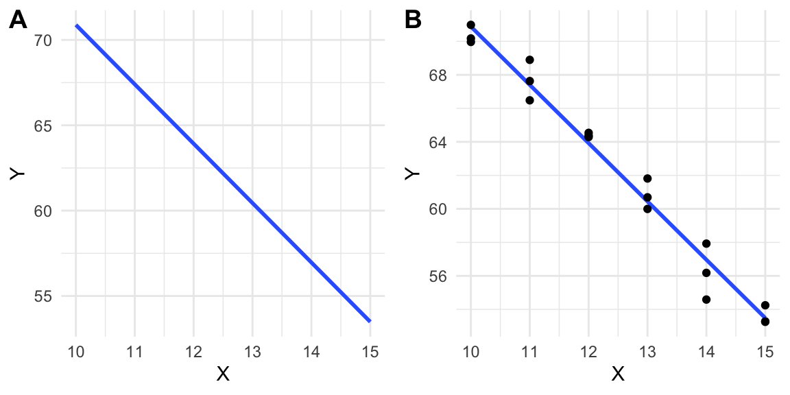

dpi <- 72
std_ar <- 5/7 # .71
one_response_plot_width = 3
one_response_plot_height = 3
two_response_plot_width = 6
two_response_plot_height = 38 An introduction to linear models
All students are familiar with the idea of a linear model from learning the equation of a line, which is
\[ Y = mX + b \tag{8.1}\]
where \(m\) is the slope of the line and \(b\) is the \(Y\)-intercept. It is useful to think of equation (Equation 8.1) as a function that maps values of \(X\) to values of \(Y\). Using this function, if we input some value of \(X\), we always get the same value of Y as the output.
A linear model is a function, like that in Equation 8.1, that is fit to a set of data, often to model a process that generated the data or something like the data. The line in Figure 8.1 A is just that, a line, but the line in Figure 8.1 B is a linear model fit to the data in Figure 8.1 B.

8.1 Two specifications of a linear model
8.1.1 The “error draw” specification
In introductory textbooks, a linear model is typically specified using an error-draw scheme.
\[ \begin{align} Y &= \beta_0 + \beta_1 X + \varepsilon \\ \varepsilon &\sim N(0, \sigma^2) \end{align} \tag{8.2}\]
The first line of this specification has two components: the linear predictor \(Y = \beta_0 + \beta_1 X\) and the error \(\varepsilon\). The linear predictor component looks like the equation for a line except that 1) \(\beta_0\) is used for the intercept and \(\beta_1\) for the slope and 2) the intercept term precedes the slope term. This re-labeling and re-arrangement make the notation for a linear model more flexible for more complicated linear models. For example \(Y = \beta_0 + \beta_1 X_1 + \beta_2 X_2 + \varepsilon\) is a model where \(Y\) is a function of two \(X\) variables.
The linear predictor is the deterministic or systematic part of the specification. As with the equation for a line, the linear predictor component of a linear model is a function that maps a specific value of \(X\) to a unique value of \(Y\). This mapped value is the expected value, or expectation, given a specific input value of \(X\). The expectation is often written as \(\mathrm{E}[Y|X]\), which is read as “the expected value of \(Y\) given \(X\)”, where “given X” means a specific value of X. This text will often use the word conditional in place of “given”. For example, I would read \(\mathrm{E}[Y|X]\) as “the expected value of \(Y\) conditional on \(X\)”. It is important to recognize that \(\mathrm{E}[Y|X]\) is a conditional mean – it is the mean value of \(Y\) when we observe that \(X\) has some specific value \(x\) (that is \(X = x\)).
The second line of the specification (Equation 8.2) is read as “epsilon is distributed as Normal with mean zero and variance sigma squared”. This line explicitly specifies the distribution of the error component of line 1. The error component of a linear model is a random “draw” from a normal distribution with mean zero and variance \(\sigma^2\). The second line shows that the error component of the first line is stochastic. Using the error-model specification, we can think of any measurement of \(Y\) as an expected value plus some random value sampled from a normal distribution with a specified variance. Because the stochastic part of this specification draws an “error” from a population, I refer to this as the error-draw specification of the linear model.
8.1.2 The “conditional draw” specification
A second way of specifying a linear model is using a conditional-draw scheme.
\[ \begin{align} y_i &\sim N(\mu_i, \sigma^2)\\ \mathrm{E}(Y|X) &= \mu\\ \mu_i &= \beta_0 + \beta_1 x_i \end{align} \tag{8.3}\]
The first line states that the response variable \(Y\) is a random variable independently drawn from a normal distribution with mean \(\mu\) and variance \(\sigma^2\). This first line is the stochastic part of the statistical model. The second line simply states that \(\mu\) (the greek letter “mu”) from the first line is the conditional mean (or expectation). The third line is the liner predictor, which states how \(\mu_i\) is generated given that \(X=x_i\). Again, the linear predictor is the systematic (or deterministic) part of the statistical model. It is systematic because the same value of \(x_i\) will always generate the same \(\mu_i\). With the conditional-draw specification, we can think of a measurement (\(y_i\)) as a random draw from the specified distribution. Because it is \(Y\) and not some “error” that is drawn from the specified distribution, I refer to this as the conditional-draw specification of the linear model.
8.1.3 Comparing the error-draw and conditional-draw ways of specifying the linear model
These two ways of specifying the model encourage slightly different ways of thinking about how the data (the response varible \(Y\)) were generated. The error-draw specification “generates” data by 1) constructing what \(y_i\) “should be” given \(x_i\) (this is the conditional expection), then 2) adding some error \(e_i\) drawn from a normal distribution with mean zero and some specified variance. The conditional-draw specification “generates” data by 1) constructing what \(y_i\) “should be” given \(x_i\), then 2) drawing a random variable from some specified distribution whose mean is this expectation. This random draw is not “error” but the measured value \(y_i\). For the error draw generation, we need only one hat of random numbers, but for the conditional draw generation, we need a hat for each value of \(x_i\).
Here is a short script that generates data by implementing both the error-draw and conditional-draw specifications. See if you can follow the logic of the code and match it to the meaning of these two ways of specifying a linear model.
n <- 5
b_0 <- 10.0
b_1 <- 1.2
sigma <- 0.4
x <- 1:n
y_expected <- b_0 + b_1*x
# error-draw. Note that the n draws are all from the same distribution
set.seed(1)
y_error_draw <- y_expected + rnorm(n, mean = 0, sd = sigma)
# conditional-draw. Note that the n draws are each from a different
# distribution because each has a different mean.
set.seed(1)
y_conditional_draw <- rnorm(n, mean = y_expected, sd = sigma)
data.table(X = x,
"Y (error draw)" = y_error_draw,
"Y (conditional draw)" = y_conditional_draw) X Y (error draw) Y (conditional draw)
<int> <num> <num>
1: 1 10.94942 10.94942
2: 2 12.47346 12.47346
3: 3 13.26575 13.26575
4: 4 15.43811 15.43811
5: 5 16.13180 16.13180
Pseudorandom
rnorm() is a pseudorandom number generator that simulates random draws from a normal distribution with the specified mean and variance. The algorithm to generate the numbers is entirely deterministic – the numbers are not truly random but are “pseudorandom”. The list of numbers returned closely approximates a set of true, random numbers. The sequence of numbers returned is determined by the “seed”, which can be set with the set.seed() function (R will use an internal seed if not set by the user).
The error-draw specification is not very useful for thinking about data generation for data analyzed by generalized linear models, which are models that allow one to specify distribution families other than Normal (such as the binomial, Poisson, and Gamma families). In fact, thinking about a model as a predictor plus error can lead to the misconception that, in a generalized linear model, the error (or residuals from the fit) has a distribution from the non-Normal distribution modeled. This cannot be true because the distributions modeled using generalized linear models (other than the Normal) do not have negative values (some residuals must have negative values since the mean of the residuals is zero). Introductory biostatistics textbooks typically only introduce the error-draw specification because introductory textbooks recommend data transformation or non-parametric tests if the data are not approximately normal. This is unfortunate because generalized linear models are extremely useful for real biological data.
Although a linear model (or statistical model more generally) is a model of a data-generating process, linear models are not typically used to actually generate any data. Instead, when we use a linear model to understand something about a real dataset, we think of our data as one realization of a process that generates data like ours. A linear model is a model of that process. That said, it is incredibly useful to use linear models to create fake datasets for at least two reasons: to probe our understanding of statistical modeling generally and, more specifically, to check that a model actually creates data like that in the real dataset that we are analyzing.
8.1.4 ANOVA notation of a linear model
Many textbooks treat ANOVA differently from regression and express a linear model as an ANOVA model (and generally do not use the phrase “linear model”). ANOVA models are all variations of
\[ \begin{equation} y_{ij} = \mu + \tau_{i} + \varepsilon_{ij} \end{equation} \tag{8.4}\]
Unlike the error and conditional draw specifications above, the ANOVA model doesn’t have a linear predictor in the form of a regression equation (or the equation for a line) – that is, there are neither \(X\) variables nor coefficients (\(\beta\)). Instead, the ANOVA model is made up of a linear combination of means and deviations from means. In (Equation 8.4), \(\mu\) is the grand mean (the mean of the means of the groups), \(\tau_i\) is the deviation of the mean of group \(i\) from the grand mean (these are the effects), and \(\varepsilon_{ij}\) is the deviation (or error) of individual \(j\) from the mean of group \(i\). Traditional ANOVA computes effects and the statistics for inference by computing means and deviations from means. Modern linear models compute effects and the statistics for inference by solving for the coefficients of a regression model.
8.2 A linear model can be fit to data with continuous, discrete, or categorical \(X\) variables
In the linear model fit to the data in Figure (Figure 8.1)B, the \(X\) variable is continuous, which can take any real number between the minimum \(X\) and maximum \(X\) in the data. For biological data, most variables that are continuous are positive, real numbers (a zero is not physically possible but could be recorded in the data if the true value is less than the minimum measurable amount). One exception is a composition (the fraction of a total), which can be zero. Negative values can occur with variables in which negative represent a direction (work, electrical potential) or a rate. Discrete variables are numeric but limited to certain real numbers. Most biological variables that are discrete are counts, and can be zero, but not negative. Categorical variables are non-numeric descriptions of a measure. Many of the categorical variables in this text will be the experimentally controlled treatment variable of interest (the variable \(treatment\) containing the values “wild type” and “knockout”) but some are measured covariates (the variable \(sex\) containing the values “female” and “male”).
8.2.1 Fitting linear models to experimental data in which the \(X\) variable is continuous or discrete
A linear model fit to data with a numeric (continous or discrete) \(X\) is classical regression and the result is typically communicated by a regression line. The experiment introduced in (linear-models-with-a-single-continuous-x?, Linear models with a single, continuous X) is a good example. In this experiment, the researchers designed an experiment to measure the effect of warming on the timing of photosynthetic activity. Temperature was experimentally controlled at one of five settings (0, 2.25, 4.5, 6.75, or 9 °C above ambient temperature) within twelve, large enclosures. The response variable in the illustrated example is Autumn “green-down”, which is the day of year (DOY) of the transition to loss of photosynthesis. The intercept and slope parameters of the regression line (Figure (Figure 8.2)) are the coefficients of the linear model. The slope (4.98 days per 1 °C added warmth) estimates the effect of warming on green-down DOY. What is not often appreciated at the introductory biostatistics level is that the slope is a difference in conditional means. Any point on a regression line is the expected value of \(Y\) at a specified value of \(X\), that is, the conditional mean \(\mathrm{E}(Y|X)\). The slope is the difference in expected values for a pair of points that differ in \(X\) by one unit.
\[ b_1 = \mathrm{E}(Y|X=x+1) - \mathrm{E}(Y|X=x+1) \]
I show this in Figure 8.2 using the points on the regression line at \(x = 5\) and \(x = 6\). Thinking about a regression coefficient as a difference in conditional means is especially useful for understanding the coefficients of a categorical \(X\) variable, as described below.

8.2.2 Fitting linear models to experimental data in which the \(X\) variable is categorical
Linear models can be fit to experimental data in which the \(X\) variable is categorical – this is the focus of this text! For the model fit to the data in Figure 8.1 B, the coefficient of \(X\) is the slope of the line. Perhaps surprisingly, 1) we can fit a model like Equation 8.2 to data in which the \(X\) variable is categorical and 2) the coefficient of \(X\) is a slope. How is this possible? The slope of a line is \(\frac{y_2 - y_1}{x_2 - x_1}\) where \((x_1, y_1)\) and \((x_2, y_2)\) are the graph coordinates of any two points on the line. What is the denominator of the slope function \((x_2 - x_1)\) when \(X\) is categorical?
The solution to using a linear model with categorical \(X\) is to recode the factor levels into numbers. An example of this was outlined in Chapter Chapter 1. The value of \(X\) for individual mouse i is a number that indicates the treatment assignment – a value of 0 is given to mice with a functional ASK1 gene and a value of 1 is given to mice with a knocked out gene. The regression line goes through the two group means (Figure 8.3). With the (0, 1) coding, \(\overline{x}_{ASK1Δadipo} - \overline{x}_{ASK1F/F} = 1\), so the denominator of the slope is equal to one and the slope is simply equal to the numerator \(\overline{y}_{ASK1Δadipo} - \overline{y}_{ASK1F/F}\). The coefficient (which is a slope!) is the difference in conditional means.

8.3 Statistical models are used for prediction, explanation, and description
Researchers typically use statistical models to understand relationships between one or more \(Y\) variables and one or more \(X\) variables. These relationships include
Descriptive modeling. Sometimes a researcher merely wants to describe the relationship between \(Y\) and a set of \(X\) variables, perhaps to discover patterns. For example, the arrival of a spring migrant bird (\(Y\)) as a function of sex (\(X_1\)) and age (\(X_2\)) might show that males and younger individuals arrive earlier. Importantly, if another \(X\) variable is added to the model (or one dropped), the coefficients, and therefore, the precise description, will change. That is, the interpretation of a coefficient as a descriptor is conditional on the other covariates (\(X\) variables) in the model. In a descriptive model, there is no implication of causal effects and the goal is not prediction. Nevertheless, it is very hard for humans to discuss a descriptive model without using causal language, which probably means that it is hard for us to think of these models as mere description. Like natural history, descriptive models are useful as patterns in want of an explanation, using more explicit causal models including experiments.
Predictive modeling. Predictive modeling is very common in applied research. For example, fisheries researchers might model the relationship between population density and habitat variables to predict which subset of ponds in a region are most suitable for brook trout (Salvelinus fontinalis) reintroduction. The goal is to build a model with minimal prediction error, which is the error between predicted and actual values for a future sample. In predictive modeling, the \(X\) (“predictor”) variables are largely instrumental – how these are related to \(Y\) is not a goal of the modeling, although sometimes an investigator may be interested in the relative importance among the \(X\) for predicting \(Y\) (for example, collecting the data may be time consuming, or expensive, or enviromentally destructive, so know which subset of \(X\) are most important for predicting \(Y\) is a useful strategy).
Explanatory (causal) modeling. Very often, researchers are explicitly interested in how the \(X\) variables are causally related to \(Y\). The fisheries researchers that want to reintroduce trout may want to develop and manage a set of ponds to maintain healthy trout populations. This active management requires intervention to change habitat traits in a direction, and with a magnitude, to cause the desired response. This model is predictive – a specific change in \(X\) predicts a specific response in \(Y\) – because the coefficients of the model provide knowledge on how the system functions – how changes in the inputs cause change in the output. Causal interpretation of model coefficients requires a set of strong assumptions about the \(X\) variables in the model. These assumptions are typically met in experimental designs but not observational designs.
With observational designs, biologists are often not very explicit about which of these is the goal of the modeling and use a combination of descriptive, predictive, and causal language to describe and discuss results. Many papers read as if the researchers intend explanatory inference but because of norms within the biology community, mask this intention with “predictive” language. Here, I advocate embracing explicit, explanatory modeling by being very transparent about the model’s goal and assumptions.
8.4 What is the interpretation of a regression coefficient?
A regression coefficient is the difference in \(Y\) that we expect to see if we see a one unit difference in X, but we see no difference in any other covariate (the other X).
8.5 What do we call the \(X\) and \(Y\) variables?
The inputs to a linear model (the \(X\) variables) have many names. In this text, the \(X\) variables are typically
- treatment variables – this term makes sense only for categorical variables and is often used for variables that are a factor containing the treatment assignment (for example “control” and “knockout”)
- factor variables (or simply, factors) – again, this term makes sense only for categorical variables
- covariates – this term is usually used for the non-focal \(X\) variables in a statistical model.
A linear model is a regression model and in regression modeling, the \(X\) variables are typically called
- independent variables (often shortened to IV) – “independent” in the sense that in a statistical model at least, the \(X\) are not a function of \(Y\).
- predictor variables (or simply, “predictors”) – this makes the most sense in prediction models.
- explanatory variables – this term is usually applied in observational designs and is best used if the explicit goal is causal modeling.
In this text, the output of a linear model (the \(Y\) variable or variables if the model is multivariate) will most often be calle either of
- response variable (or simply, “response”)
- outcome variable (or simply, “outcome”)
These terms have a causal connotation in everyday english. These terms are often used in regression modeling with observational data, even if the model is not explicitly causal. One other term, common in introductory textbooks, is
- dependent variable – “dependent” in the sense that in a statistical model at least, the \(Y\) is a function of the \(X\).
8.6 Modeling strategy
A “best practice” sequence of steps used throughout this text to analyze experimental data is
- examine the data using exploratory plots to
- examine individual points and identify outliers that are likely due to data transcription errors or measurement blunders
- examine outlier points that are biologically plausible, but raise ref flags about undue influe on fit models. This information is used to inform the researcher on the strategy to handle outliers in the statistical analysis, including algorithms for excluding data or implementation of robust methods.
- provide useful information for initial model filtering (narrowing the list of potential models that are relevant to the question and data). Statistical modeling includes a diverse array of models, yet almost all methods used by researchers in biology, and all models in this book, are generalizations of the linear model specified in (Equation 8.3). For some experiments, there may be multiple models that are relevant to the question and data. Model checking (step 3) can help decide which model to ultimately use.
- fit the model, in order to estimate the model parameters and the uncertainty in these estimates.
- check the model, which means to use a series of diagnostic plots and computations of model output to check that the fit model reasonably approximates the data. If the diagnostic plots suggest a poor approximation, then choose a different model and go back to step 2.
- inference from the model, which means to use the fit parameters to learn, with uncertainty, about the system, or to predict future observations, with uncertainty.
- plot the model, which means to plot the data, which may be adjusted, and the estimated parameters (or other results dervived from the estimates) with their uncertainty.
Note that step 1 (exploratory plots) is not data mining, or exploring the data for patterns to test.
8.7 Predictions from the model
For the linear model specified in Model (Equation 8.2), the fit model is
\[ y_i = b_0 + b_1 x_i + e_i \tag{8.5}\]
where \(b_0\) and \(b_1\) are the coefficients of the fit model and the \(e_i\) are the residuals of the fit model. We can use the coefficients and residuals to recover the \(y_i\), although this would rarely be done. More commonly, we could use the coefficients to calculate conditional means (the mean conditional on a specified value of \(X\)).
\[ \hat{y}_i = b_0 + b_1 x_i \tag{8.6}\]
The conditional means are typically called fitted values, if the \(X\) are the \(X\) used to fit the model, or predicted values, if the \(X\) are new. “Predicted values” is often shortened to “the prediction”.
8.8 Inference from the model
If our goal is inference, we want to use the fit parameters to learn, with uncertainty, about the system. Using Equation 8.5, the coefficients \(b_0\) and \(b_1\) are point estimates of the true, generating parameters \(\beta_0\) and \(\beta_1\), the \(e_i\) are estimates of \(\varepsilon_i\) (the true, biological “noise”), and \(\frac{\sum{e_i^2}}{N-2}\) is an estimate of the true, population variance \(\sigma^2\) (this will be covered more in Chapter 10 but you may recognize that \(\frac{\sum{e_i^2}}{N-2}\) is the formula for a variance). And, using Equation 8.6, \(\hat{y}_i\) is the point estimate of the parameter \(\mu_i\) (the true mean conditional on \(X=x_i\)). Throughout this text, Greek letters refer to a theoretical parameter and Roman letters refer to point estimates.
Our uncertainty in the estimates of the parameters due to sampling is the standard error of the estimate. It is routine to report standard errors of means and coefficients of the model. While a standard error of the estimate of \(\sigma\) is available, this is effectively never reported, at least in the experimental biology literature, presumably because the variance is thought of as a nuisance parameter (noise) and not something worthy of study. This is a pity. Certainly treatments can effect the variance in addition to the mean.
Parametric inference assumes that the response is drawn from some probability distribution (Normal, or Poisson, or Bernouli, etc.). Throughout this text, I emphasize reporting and interpreting point estimates and interval estimates of the point estimate. A confidence interval is a type of interval estimate. A confidence interval of a parameter is a measure of the uncertainty in the estimate. A 95% confidence interval has a 95% probability (in the sense of long-run frequency) of containing the parameter. This probability is a property of the population of intervals that could be computed using the same sampling and measuring procedure. It is not correct, without further assumptions, to state that there is a 95% probability that the parameter lies within the interval. Perhaps a more useful interpretation is that the interval is a compatability interval in that it contains the range of estimates that are compatible with the data, in the sense that a \(t\)-test would not reject the null hypothesis of a difference between the estimate and any value within the interval (this interpretation does not imply anything about the true value).
Another kind of inference is a significance test, which is the computation of the probability of “seeing the data” or something more extreme than the data, given a specified null hypothesis. This probability is the p-value, which can be reported with the point estimate and confidence interval. There are some reasonable arguments made by very influential statisticians that p-values are not useful and lead researchers into a quagmire of misconceptions that impede good science. Nevertheless, the current methodology in most fields of Biology have developed in a way to become completely dependent on p-values. I think at this point, a p-value can be a useful, if imperfect tool in inference, and will show how to compute p-values throughout this text.
Somewhat related to a significance test is a hypothesis test, or a Null-Hypothesis Signficance Test (NHST), in which the \(p\)-value from a significance test is compared to a pre-specified error rate called \(\alpha\). Hypothesis testing was developed as a formal means of decision making but this is rarely the use of NHST in experimental biology. For almost all applications of p-values that I see in the literature that I read in ecology, evolution, physiology, and wet-bench biology, comparing a \(p\)-value to \(\alpha\) adds no value to the communication of the results.
8.8.1 Assumptions for inference with a statistical model
- The data were generated by a process that is “linear in the parameters”, which means that the different components of the model are added together. This additive part of the model containing the parameters is the linear predictor in specifications (Equation 8.2) and (Equation 8.3) above. For example, a cubic polynomial model
\[ \mathrm{E}(Y|X) = \beta_0 + \beta_1 X + \beta_2 X^2 + \beta_3 X^3 \]
is a linear model, even though the function is non-linear, because the different components are added. Because a linear predictor is additive, it can be compactly defined using matrix algebra
\[ \mathrm{E}(Y|X) = \mathbf{X}\boldsymbol{\beta} \]
where \(mathbf{X}\) is the model matrix and \(\boldsymbol{\beta}\) is the vector of parameters.
A Generalized Linear Model (GLM) has the form \(g(\mu_i) = \eta_i\) where \(\eta\) (the Greek letter “eta”) is the linear predictor
\[\begin{equation} \eta = \mathbf{X}\boldsymbol{\beta} \end{equation}\]
GLMs are extensions of linear models. There are non-linear models that are not linear in the parameters, that is, the predictor is not a simple dot product of the model matrix and a vector of parameters. For example, the Michaelis-Menten model is a non-linear model
\[ \mathrm{E}(Y|X) = \frac{\beta_1 X}{\beta_2 + X} \]
that is non-linear in the parameters because the parts are not added together. This text covers linear models and generalized linear models, but not non-linear models that are also non-linear in the parameters.
- The draws from the probability distribution are independent. Independence implies uncorrelated \(Y\) conditional on the \(X\), that is, for any two \(Y\) with the same value of \(X\), we cannot predict the value of one given the value of the other. For example, in the ASK1 data above, “uncorrelated” implies that we cannot predict the glucose level of one mouse within a specific treatment combination given the glucose level of another mouse in that combination. For linear models, this assumption is often stated as “independent errors” (the \(\varepsilon\) in model (Equation 8.2)) instead of independent observations.
There are lots of reasons that conditional responses might be correlated. In the mouse example, correlation within treatment group could arise if subsets of mice in a treatment group are siblings or are housed in the same cage. More generally, if there are measures both within and among experimental units (field sites or humans or rats) then we’d expect the measures within the same unit to err from the model in the same direction. Multiple measures within experimental units (a site or individual) creates “clustered” observations. Lack of independence or clustered observations can be modeled using models with random effects. These models go by many names including linear mixed models (common in Ecology), hierarchical models, multilevel models, and random effects models. A linear mixed model is a variation of model Equation 8.2. This text introduces linear mixed models in Chapter 15.
Measures that are taken from sites that are closer together or measures taken closer in time or measures from more closely related biological species will tend to have more similar values than measures taken from sites that are further apart or from times that are further apart or from species that are less closely related. Space and time and phylogeny create spatial and temporal and phylogenetic autocorrelation. Correlated error due to space or time or phylogeny can be modeled with Generalized Least Squares (GLS) models. A GLS model is a variation of model (Equation 8.2).
8.8.2 Specific assumptions for inference with a linear model
- Constant variance or homoskedasticity. The most common way of thinking about this is the error term \(\varepsilon\) has constant variance, which is a short way of saying that random draws of \(\varepsilon\) in model (Equation 8.2) are all from the same (or identical) distribution. This is explicitly stated in the second line of model specification (Equation 8.2). If we were to think about this using model specification (Equation 8.3), then homoskedasticity means that \(\sigma\) in \(N(\mu, \sigma)\) is constant for all observations (or that the conditional probability distributions are identical, where conditional would mean adjusted for \(\mu\))
Many biological processes generate data in which the error is a function of the mean. For example, measures of biological variables that grow, such as lengths of body parts or population size, have variances that “grow” with the mean. Or, measures of counts, such as the number of cells damaged by toxin, the number of eggs in a nest, or the number of mRNA transcripts per cell have variances that are a function of the mean. Heteroskedastic error can be modeled with Generalized Least Squares, a generalization of the linear model, and with Generalized Linear Models (GLM), which are “extensions” of the classical linear model.
- Normal or Gaussian probability distribution. As above, the most common way of thinking about this is the error term \(\varepsilon\) is Normal. Using model specification (Equation 8.3), we’d say the conditional probablity distribution of the response is normal. A normal probability distribution implies that 1) the response is continuous and 2) the conditional probability is symmetric around \(mu_i\). If the conditional probability distribution has a long left or right tail it is skewed left or right. Counts (number of cells, number of eggs, number of mRNA transcripts) and binary responses (sucessful escape or sucessful infestation of host) are not continuous and often often have asymmetric probablity distributions that are skewed to the right and while sometimes both can be reasonably modeled using a linear model they are more often modeled using generalized linear models, which, again, is an extension of the linear model in equation (Equation 8.3). A classical linear model is a specific case of a GLM.
A common misconception is that inference from a linear model assumes that the raw response variable is normally distributed. Both the error-draw and conditional-draw specifications of a linear model show precisely why this conception is wrong. Model (?eq-lm) states explicitly that it is the error that has the normal distribution – the distribution of \(Y\) is a mix of the distribution of \(X\) and the error. Model (Equation 8.3) states that the conditional outcome has a normal distribution, that is, the distribution after adjusting for variation in \(X\).
8.9 “linear model,”regression model”, or “statistical model”?
Statistical modeling terminology can be confusing. The \(X\) variables in a statistical model may be quantitative (continuous or integers) or categorical (names or qualitative amounts) or some mix of the two. Linear models with all quantitative independent variables are often called “regression models.” Linear models with all categorical independent variables are often called “ANOVA models.” Linear models with a mix of quantitative and categorical variables are often called “ANCOVA models” if the focus is on one of the categorical \(X\) or “regression models” if there tend to be many independent variables.
This confusion partly results from the history of the development of regression for the analysis of observational data and ANOVA for the analysis of experimental data. The math underneath classical regression (without categorical variables) is the linear model. The math underneath classical ANOVA is the computation of sums of squared deviations from a group mean, or “sums of squares”. The basic output from a regression is a table of coefficients with standard errors. The basic ouput from ANOVA is an ANOVA table, containing the sums of squares along with mean-squares, F-ratios, and p-values. Because of these historical differences in usage, underlying math, and output, many textbooks in biostatistics are organized around regression “vs.” ANOVA, presenting regression as if it is “for” observational studies and ANOVA as if it is “for” experiments.
It has been recognized for many decades that experiments can be analyzed using the technique of classical regression if the categorical variables are coded as numbers (again, this will be explained later) and that both regression and ANOVA are variations of a more general, linear model. Despite this, the “regression vs. ANOVA” way-of-thinking dominates the teaching of biostatistics.
To avoid misconceptions that arise from thinking of statistical analysis as “regression vs. ANOVA”, I will use the term “linear model” as the general, umbrella term to cover everything in this book. By linear model, I mean any model that is linear in the parameters, including classical regression models, marginal models, linear mixed models, and generalized linear models. To avoid repetition, I’ll also use “statistical model”.